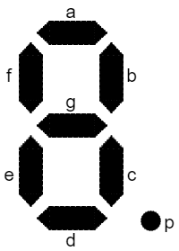
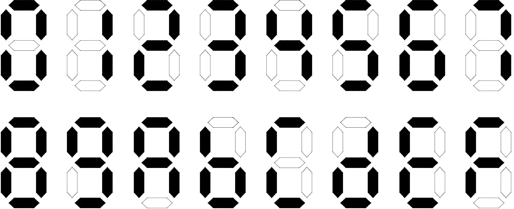
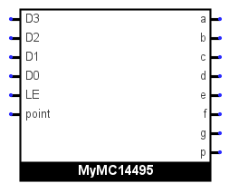
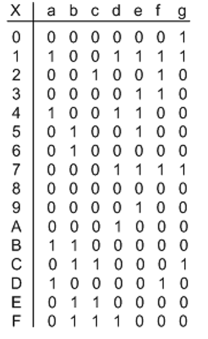
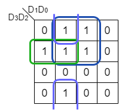
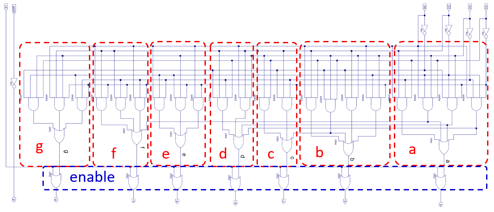
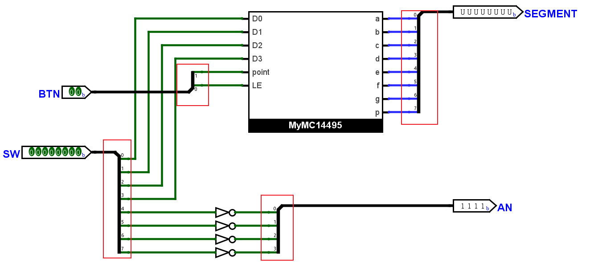
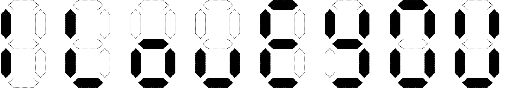
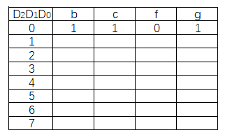

七段数码管
实验背景
七段数码管由 7 个 LED（发光二极管）组成，它们被分别命名为了 a, b, c, d, e, f, g，我们还添加了一个小数点 p。它们命名与位置的对应如下图：

七段数码管可以用来将输出信号转换为人类能够阅读的“数字”，比如我们可以将十六进制下的十六个数字表示为下图的形式：

需要注意的是，这些 LED 共阳极，我们给出 0 才能点亮（低电平有效）。比如，我们希望七段数码管显示为上图中“0”的样子，需要将 g 以外的信号设置为 0 表示点亮并将 g 设置为 1。可以看到 Arduino 板上有四个七段数码管，为了节约管脚，它们都使用了同一组输入信号，也即同一时间四个七段数码管都会显示相同的内容，我们将在后续实验中学习并实现显示“不同数字”的方法。
本次实验的目的是设计一个译码器，其功能与 MC14495 芯片类似，它得到 4 位输入并给出 7 位输出。不同于 Lab 5 设计的二进制译码器，它在一组输入下的输出信号中可以有多个表示“有效”的输出。
设计实现 MC14495 功能
实现
我们要实现的组合部件 MyMC14495 端口如下：

D3~D0：输入的 4 位二进制数字LE：使能信号，低电平有效point：用来表示小数点是否点亮，高电平有效- 输出信号
a~g, p：均为低电平有效，信号对应的位置请参考七段数码管示意图
这个译码器的功能是根据 4 位输入得到 7 位输出，我们可以很自然地通过输入信号组成每一个输出信号的布尔表达式。首先，我们需要得到真值表，根据实验背景中的描述，可知真值表如下：

以输出信号 e 为例，用 D0~D3 分别表示四位输入，它可以写作
或者最小项形式
我们希望通过化简得到一个更简单的表达式，比如使用卡诺图对上式进行化简，一种可行的化简与对应的表达式如下：

在进行实现时，请注意 LE 为低电平有效，即值为 1 时所有的输出均为无效的 1；point 为高电平有效，即值为 1 时点亮小数点 p 输出为 0。
你可以进行选择
本节的实现你可以从原理图实现与 Verilog 实现中选择一种，但不管通过哪种方式实现，你需要做到最终得到的 Verilog 代码的
- 模块名为
MyMC14495； - 输入端口名分别为
D0, D1, D2, D3, LE, point； - 输出端口名分别为
a, b, c, d, e, f, g, p；
请注意大小写，应与上述完全一致。
同时请注意，不论选择哪种方式实现，你都需要进行仿真。
使用 Verilog 实现
如果你选择直接通过 Verilog 代码实现，请自行学习组合逻辑的基本写法，你可能会遇到这些关键词：always @(*)，case，你可以将化简的工作交给综合器，而不需要自己对电路输出进行化简。请直接使用如下代码作为模块与端口定义：
使用原理图实现
你可以参考下图绘制原理图，请确保你修改了 Circuit 名以及端口名使其符合要求。绘制完成后，导出为 Verilog。

仿真
对你实现得到的 MyMC14495 模块进行仿真，可以使用这个框架，但需要你自行填写 initial 块中的内容。
仿真代码
简单使用
对我们刚刚实现的 MyMC14495 进行简单封装为 DispNum 模块。使用 1 个按钮控制使能信号 LE，1 个按钮控制小数点，4 个开关表示输入的数字，还有 4 个开关直接控制 Arduino 上七段数码管的亮灭（AN 信号）。这个模块的端口说明如下：
- 输入端口
BTN[1:0]：按钮阵列中同一行的两个按钮SW[7:0]：板上右半边的 8 个开关
- 输出端口
SEGMENT[7:0]：七段数码管（含小数点）SEGMENT[7]与p连接SEGMENT[0]~SEGMENT[6]分别与a, b, c, d, e, f, g连接
AN[3:0]用来直接控制 4 个七段数码管的亮灭
通过原理图实现的同学，请参照下图，使用刚刚绘制的 MyMC14495 电路绘制本节电路 DispNum 并导出，请注意红框圈出的分线器下标与连接端口的对应关系：

通过 Verilog 实现的同学，请参照上图直接书写 Verilog 代码，要求模块名 DispNum，端口名与上图相同。你可能需要了解模块实例化与 wire 信号的连续赋值。
本节需要进行下板，你可以使用约束文件，生成比特流并下载。
实验报告要求
设计实现 MC14495 功能
- 使用 Verilog 实现则在报告中给出
MyMC14495模块的完整代码，请尽量使用高亮代码方便助教查看；使用原理图实现则给出 Logisim 原理图截图。 - 请给出完整的仿真代码，尽量使用高亮。
- 给出仿真截图，要求缩放合适，并对波形进行解释。
简单使用
- 使用 Verilog 实现则在报告中给出
DispNum模块的完整代码；使用原理图实现则给出 Logisim 原理图截图。 - 下板，调整
AN使只有最左侧和最右侧两个七段数码管亮起，拍摄输入为4'b0000, 4'b1000, 4'b1111时的图片。
"I LovE YOU" decoder
设计一个译码器，获得 3 位输入 D2, D1, D0 并转换为 7 位输出，当输入为 0~7 时分别输出 "I LovE YOU"，如下图所示：

请给出 b, c, f, g 这四个 LED 信号的真值表以及关于输入 D2, D1, D0 的布尔表达式。你可以直接化简也可以使用卡诺图化简，前者请给出详细步骤，后者请画出卡诺图并圈出你选择的项。
真值表填写：
